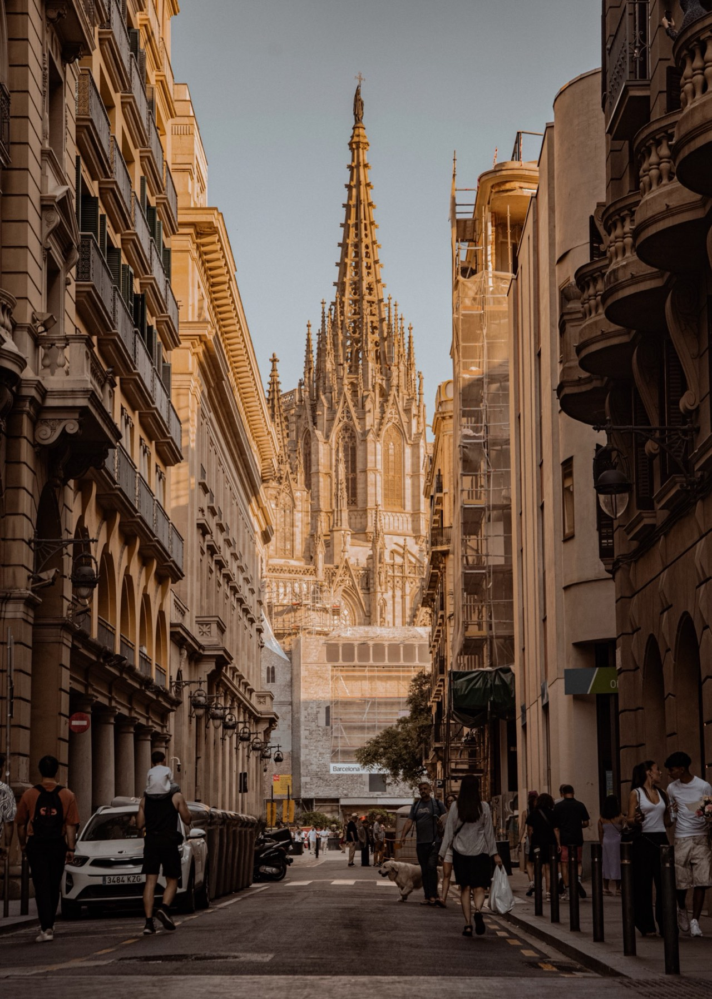
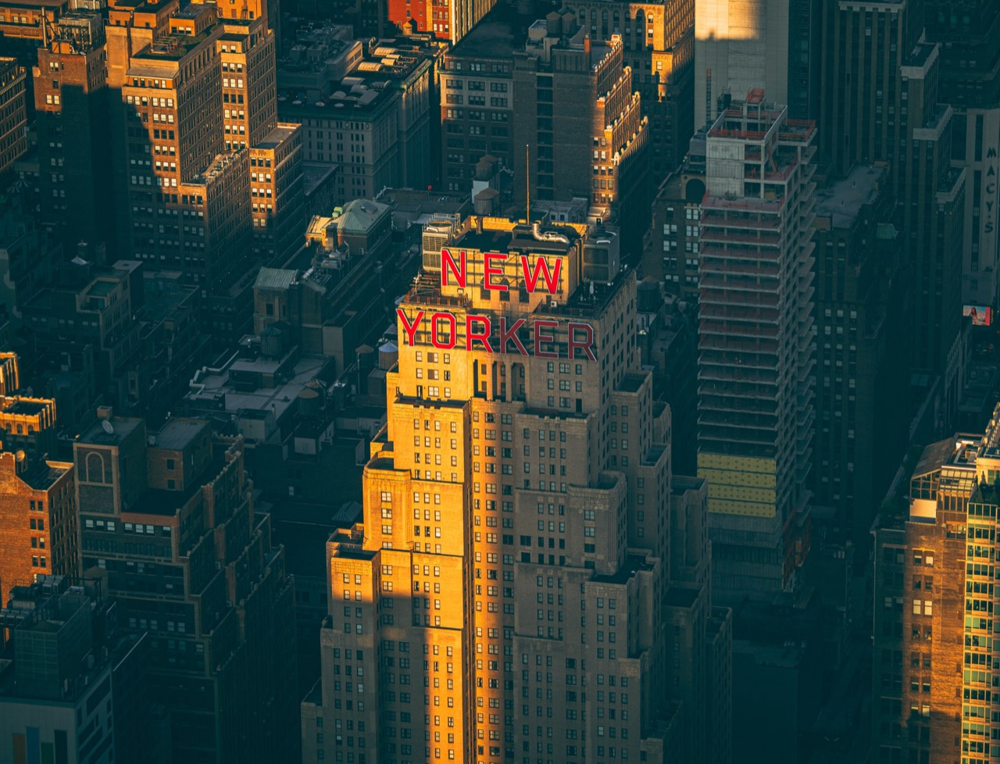

tuan photography 陳亮元: landscape photographs, and how each one was made

Matterhorn reflected
Zermatt, SwitzerlandAugust 2024
35mmf/4.51/1600sISO 125Canon EOS R6 Mark IIRF 24-105mm F4 L IS USM

Sa Pa terraces
Lào Cai, VietnamAugust 2026
124mmf/81/800sISO 640Canon EOS R6 Mark IIRF 70-200mm F2.8 L IS USM

Kinkaku-ji
Kyoto, JapanJanuary 2025
58mmf/4.51/640sISO 125Canon EOS R6 Mark IIRF 24-105mm F4 L IS USM

Gothic Quarter
Barcelona, SpainJuly 2026
70mmf/5.61/200sISO 160Canon EOS R6 Mark IIRF 24-105mm F4 L IS USM

Manhattan from Edge
New York, United StatesJuly 2025
124mmf/3.21/2000sISO 250Canon EOS R6 Mark IIRF 70-200mm F2.8 L IS USM

Victoria Harbour at night
Hong KongMay 2025
70mmf/2.81/10sISO 1000Canon EOS R6 Mark IIRF 70-200mm F2.8 L IS USM

Milky Way over Tekapo
Lake Tekapo, New ZealandJanuary 2026
17mmf/2.820sISO 3200Canon EOS R6 Mark IIRF 15-35mm F2.8 L IS USM